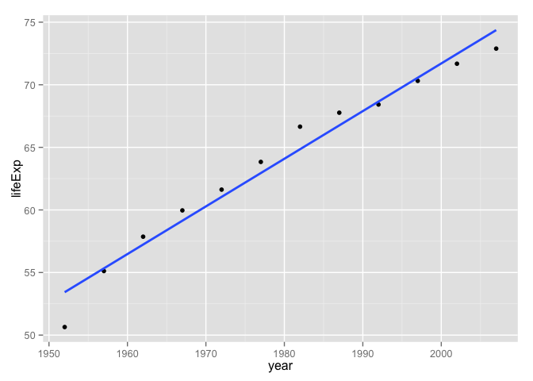

Basic care and feeding of data in R
Buckle your seatbelt
Ignore if you don’t need this bit of support.
Now is the time to make sure you are working in an appropriate directory on your computer, probably through the use of an RStudio Project. Enter getwd() in the Console to see current working directory or, in RStudio, this is displayed in the bar at the top of Console.
You should clean out your workspace. In RStudio, click on the “Clear” broom icon from the Environment tab or use Session > Clear Workspace. You can also enter rm(list = ls()) in the Console to accomplish same.
Now restart R. This will ensure you don’t have any packages loaded from previous calls to library(). In RStudio, use Session > Restart R. Otherwise, quit R with q() and re-launch it.
Why do we do this? So that the code you write is complete and re-runnable. If you return to a clean slate often, you will root out hidden dependencies where one snippet of code only works because it relies on objects created by code saved elsewhere or, much worse, never saved at all. Similarly, an aggressive clean slate approach will expose any usage of packages that have not been explicitly loaded.
Finally, open a new R script and develop and run your code from there. In RStudio, use File > New File > R Script. Save this script with a name ending in .r or .R, containing no spaces or other funny stuff, and that evokes whatever it is we’re doing today. Example: cm004_data-care-feeding.r.
Get the Gapminder data
We will work with some of the data from the Gapminder project. I’ve released this as an R package, so we can install it from CRAN like so:
install.packages("gapminder")Now load the package:
library(gapminder)Meet your first data.frame
Whenever you have rectangular, spreadsheet-y data, your default data receptacle in R is a data.frame. Do not depart from this without good reason. data.frames are awesome because…
- data.frames package related variables neatly together,
- keeping them in sync vis-a-vis row order
- applying any filtering of observations uniformly
- most functions for inference, modelling, and graphing are happy to be passed a data.frame via a
data =argument as the place to find the variables you’re working on; the latest and greatest packages actually require that your data be in a data.frame - data.frames – unlike general arrays or, specifically, matrices in R – can hold variables of different flavors (heuristic term defined later), such as character data (subject ID or name), quantitative data (white blood cell count), and categorical information (treated vs. untreated)
By loading the gapminder package, we now have access to a data.frame by the same name. Get an overview of this with str(), which displays the structure of an object. It will provide a sensible description of almost anything and, worst case, nothing bad can actually happen. When in doubt, just str() some of the recently created objects to get some ideas about what to do next.
str(gapminder)
## Classes 'tbl_df', 'tbl' and 'data.frame': 1704 obs. of 6 variables:
## $ country : Factor w/ 142 levels "Afghanistan",..: 1 1 1 1 1 1 1 1 1 1 ...
## $ continent: Factor w/ 5 levels "Africa","Americas",..: 3 3 3 3 3 3 3 3 3 3 ...
## $ year : int 1952 1957 1962 1967 1972 1977 1982 1987 1992 1997 ...
## $ lifeExp : num 28.8 30.3 32 34 36.1 ...
## $ pop : int 8425333 9240934 10267083 11537966 13079460 14880372 12881816 13867957 16317921 22227415 ...
## $ gdpPercap: num 779 821 853 836 740 ...We could print the whole thing to screen (not so useful with datasets of any size) but it’s nicer to look at the first bit or the last bit or a random snippet.
head(gapminder)
## country continent year lifeExp pop gdpPercap
## 1 Afghanistan Asia 1952 28.801 8425333 779.4453
## 2 Afghanistan Asia 1957 30.332 9240934 820.8530
## 3 Afghanistan Asia 1962 31.997 10267083 853.1007
## 4 Afghanistan Asia 1967 34.020 11537966 836.1971
## 5 Afghanistan Asia 1972 36.088 13079460 739.9811
## 6 Afghanistan Asia 1977 38.438 14880372 786.1134
tail(gapminder)
## country continent year lifeExp pop gdpPercap
## 1699 Zimbabwe Africa 1982 60.363 7636524 788.8550
## 1700 Zimbabwe Africa 1987 62.351 9216418 706.1573
## 1701 Zimbabwe Africa 1992 60.377 10704340 693.4208
## 1702 Zimbabwe Africa 1997 46.809 11404948 792.4500
## 1703 Zimbabwe Africa 2002 39.989 11926563 672.0386
## 1704 Zimbabwe Africa 2007 43.487 12311143 469.7093
gapminder[sample(nrow(gapminder), 10), ]
## country continent year lifeExp pop gdpPercap
## 125 Benin Africa 1972 47.014 2761407 1085.797
## 1458 Swaziland Africa 1977 52.537 551425 3781.411
## 648 Haiti Americas 2007 60.916 8502814 1201.637
## 471 El Salvador Americas 1962 52.307 2747687 3776.804
## 834 Korea, Dem. Rep. Asia 1977 67.159 16325320 4106.301
## 296 China Asia 1987 67.274 1084035000 1378.904
## 1097 New Zealand Oceania 1972 71.890 2929100 16046.037
## 803 Japan Asia 2002 82.000 127065841 28604.592
## 1441 Sudan Africa 1952 38.635 8504667 1615.991
## 1444 Sudan Africa 1967 42.858 12716129 1687.998More ways to query basic info on a data.frame. Note: with some of the commands below we’re benefiting from the fact that even though data.frames are technically NOT matrices, it’s usually fine to think of them that way and many functions have reasonable methods for both types of input.
names(gapminder)
## [1] "country" "continent" "year" "lifeExp" "pop" "gdpPercap"
ncol(gapminder)
## [1] 6
length(gapminder)
## [1] 6
head(rownames(gapminder))
## [1] "1" "2" "3" "4" "5" "6"
dim(gapminder)
## [1] 1704 6
nrow(gapminder)
## [1] 1704
#dimnames(gapminder) # ill-advised here ... too many rowsA statistical overview can be obtained with summary()
summary(gapminder)
## country continent year lifeExp
## Afghanistan: 12 Africa :624 Min. :1952 Min. :23.60
## Albania : 12 Americas:300 1st Qu.:1966 1st Qu.:48.20
## Algeria : 12 Asia :396 Median :1980 Median :60.71
## Angola : 12 Europe :360 Mean :1980 Mean :59.47
## Argentina : 12 Oceania : 24 3rd Qu.:1993 3rd Qu.:70.85
## Australia : 12 Max. :2007 Max. :82.60
## (Other) :1632
## pop gdpPercap
## Min. :6.001e+04 Min. : 241.2
## 1st Qu.:2.794e+06 1st Qu.: 1202.1
## Median :7.024e+06 Median : 3531.8
## Mean :2.960e+07 Mean : 7215.3
## 3rd Qu.:1.959e+07 3rd Qu.: 9325.5
## Max. :1.319e+09 Max. :113523.1
## Although we haven’t begun our formal coverage of visualization yet, it’s so important for smell-testing dataset that we will make a few figures anyway. Here we use only base R graphics, which are very basic.
plot(lifeExp ~ year, gapminder)
plot(lifeExp ~ gdpPercap, gapminder)
plot(lifeExp ~ log(gdpPercap), gapminder)
Let’s go back to the result of str() to talk about data.frames and vectors in R
str(gapminder)
## Classes 'tbl_df', 'tbl' and 'data.frame': 1704 obs. of 6 variables:
## $ country : Factor w/ 142 levels "Afghanistan",..: 1 1 1 1 1 1 1 1 1 1 ...
## $ continent: Factor w/ 5 levels "Africa","Americas",..: 3 3 3 3 3 3 3 3 3 3 ...
## $ year : int 1952 1957 1962 1967 1972 1977 1982 1987 1992 1997 ...
## $ lifeExp : num 28.8 30.3 32 34 36.1 ...
## $ pop : int 8425333 9240934 10267083 11537966 13079460 14880372 12881816 13867957 16317921 22227415 ...
## $ gdpPercap: num 779 821 853 836 740 ...A data.frame is a special case of a list, which is used in R to hold just about anything. data.frames are the special case where the length of each list component is the same. data.frames are superior to matrices in R because they can hold vectors of different flavors (heuristic term explained below), e.g. numeric, character, and categorical data can be stored together. This comes up alot.
Look at the variables inside a data.frame
To specify a single variable from a data.frame, use the dollar sign $. Let’s explore the numeric variable for life expectancy.
head(gapminder$lifeExp)
## [1] 28.801 30.332 31.997 34.020 36.088 38.438
summary(gapminder$lifeExp)
## Min. 1st Qu. Median Mean 3rd Qu. Max.
## 23.60 48.20 60.71 59.47 70.85 82.60
hist(gapminder$lifeExp)
The year variable is a numeric integer variable, but since there are so few unique values it also functions a bit like a categorical variable.
summary(gapminder$year)
## Min. 1st Qu. Median Mean 3rd Qu. Max.
## 1952 1966 1980 1980 1993 2007
table(gapminder$year)
##
## 1952 1957 1962 1967 1972 1977 1982 1987 1992 1997 2002 2007
## 142 142 142 142 142 142 142 142 142 142 142 142The variables for country and continent hold truly categorical information, which is stored as a factor in R.
class(gapminder$continent)
## [1] "factor"
summary(gapminder$continent)
## Africa Americas Asia Europe Oceania
## 624 300 396 360 24
levels(gapminder$continent)
## [1] "Africa" "Americas" "Asia" "Europe" "Oceania"
nlevels(gapminder$continent)
## [1] 5The levels of the factor continent are “Africa”, “Americas”, etc. and this is what’s usually presented to your eyeballs by R. In general, the levels are friendly human-readable character strings, like “male/female” and “control/treated”. But never ever ever forget that, under the hood, R is really storing integer codes 1, 2, 3, etc. Look at the result from str(gapminder$continent) if you are skeptical.
str(gapminder$continent)
## Factor w/ 5 levels "Africa","Americas",..: 3 3 3 3 3 3 3 3 3 3 ...This Janus-like nature of factors means they are rich with booby traps for the unsuspecting but they are a necessary evil. I recommend you resolve to learn how to properly care and feed for factors. The pros far outweigh the cons. Specifically in modelling and figure-making, factors are anticipated and accommodated by the functions and packages you will want to exploit.
Here we count how many observations are associated with each continent and, as usual, try to portray that info visually. This makes it much easier to quickly see that African countries are well represented in this dataset.
table(gapminder$continent)
##
## Africa Americas Asia Europe Oceania
## 624 300 396 360 24
barplot(table(gapminder$continent))
In the figures below, we see how factors can be put to work in figures. The continent factor is easily mapped into “facets” or colors and a legend by the ggplot2 package. Making figures with ggplot2 is covered elsewhere so feel free to just sit back and enjoy these plots or blindly copy/paste.
## install ggplot2 if you don't have it!
## install.packages("ggplot2")
library(ggplot2)
p <- ggplot(subset(gapminder, continent != "Oceania"),
aes(x = gdpPercap, y = lifeExp)) # just initializes
p <- p + scale_x_log10() # log the x axis the right way
p + geom_point() # scatterplot
p + geom_point(aes(color = continent)) # map continent to color
p + geom_point(alpha = (1/3), size = 3) + geom_smooth(lwd = 3, se = FALSE)
p + geom_point(alpha = (1/3), size = 3) + facet_wrap(~ continent) +
geom_smooth(lwd = 1.5, se = FALSE)


subset() is a nice way to isolate bits of data.frames (and other things)
Logical little pieces of data.frames are useful for sanity checking, prototyping visualizations or computations for later scale-up, etc. Many functions are happy to restrict their operations to a subset of observations via a formal subset = argument. There is a stand-alone function, also confusingly called subset(), that can isolate pieces of an object for inspection or assignment. Although subset() can work on objects other than data.frames, we focus on that usage here.
The subset() function has a subset = argument (sorry, not my fault it’s so confusing) for specifying which observations to keep. This expression will be evaluated within the specified data.frame, which is non-standard but convenient.
subset(gapminder, subset = country == "Uruguay")
## country continent year lifeExp pop gdpPercap
## 1621 Uruguay Americas 1952 66.071 2252965 5716.767
## 1622 Uruguay Americas 1957 67.044 2424959 6150.773
## 1623 Uruguay Americas 1962 68.253 2598466 5603.358
## 1624 Uruguay Americas 1967 68.468 2748579 5444.620
## 1625 Uruguay Americas 1972 68.673 2829526 5703.409
## 1626 Uruguay Americas 1977 69.481 2873520 6504.340
## 1627 Uruguay Americas 1982 70.805 2953997 6920.223
## 1628 Uruguay Americas 1987 71.918 3045153 7452.399
## 1629 Uruguay Americas 1992 72.752 3149262 8137.005
## 1630 Uruguay Americas 1997 74.223 3262838 9230.241
## 1631 Uruguay Americas 2002 75.307 3363085 7727.002
## 1632 Uruguay Americas 2007 76.384 3447496 10611.463Contrast the above command with this one accomplishing the same thing:
gapminder[1621:1632, ]
## country continent year lifeExp pop gdpPercap
## 1621 Uruguay Americas 1952 66.071 2252965 5716.767
## 1622 Uruguay Americas 1957 67.044 2424959 6150.773
## 1623 Uruguay Americas 1962 68.253 2598466 5603.358
## 1624 Uruguay Americas 1967 68.468 2748579 5444.620
## 1625 Uruguay Americas 1972 68.673 2829526 5703.409
## 1626 Uruguay Americas 1977 69.481 2873520 6504.340
## 1627 Uruguay Americas 1982 70.805 2953997 6920.223
## 1628 Uruguay Americas 1987 71.918 3045153 7452.399
## 1629 Uruguay Americas 1992 72.752 3149262 8137.005
## 1630 Uruguay Americas 1997 74.223 3262838 9230.241
## 1631 Uruguay Americas 2002 75.307 3363085 7727.002
## 1632 Uruguay Americas 2007 76.384 3447496 10611.463Yes, these both return the same result. But the second command is horrible for these reasons:
- It contains Magic Numbers. The reason for keeping rows 1621 to 1632 will be non-obvious to someone else and that includes you in a couple of weeks.
- It is fragile. If the rows of
gapminderare reordered or if some observations are eliminated, these rows may no longer correspond to the Uruguay data.
In contrast, the first command, using subset(), is self-documenting; one does not need to be an R expert to take a pretty good guess at what’s happening. It’s also more robust. It will still produce the correct result even if gapminder has undergone some reasonable set of transformations.
The subset() function can also be used to select certain variables via the select argument. It also offers unusual flexibility, so you can, for example, provide the names of variables you wish to keep without surrounding by quotes. I suppose this is mostly a good thing, but even the documentation stresses that the subset() function is intended for interactive use (which I interpret more broadly to mean data analysis, as opposed to programming).
You can use subset = and select = together to simultaneously filter rows and columns or variables.
subset(gapminder, subset = country == "Mexico",
select = c(country, year, lifeExp))
## country year lifeExp
## 985 Mexico 1952 50.789
## 986 Mexico 1957 55.190
## 987 Mexico 1962 58.299
## 988 Mexico 1967 60.110
## 989 Mexico 1972 62.361
## 990 Mexico 1977 65.032
## 991 Mexico 1982 67.405
## 992 Mexico 1987 69.498
## 993 Mexico 1992 71.455
## 994 Mexico 1997 73.670
## 995 Mexico 2002 74.902
## 996 Mexico 2007 76.195Many of the functions for inference, modelling, and graphics that permit you to specify a data.frame via data = also offer a subset = argument that limits the computation to certain observations. Here’s an example of subsetting the data to make a plot just for Colombia and a similar call to lm for fitting a linear model to just the data from Colombia.
p <- ggplot(subset(gapminder, country == "Colombia"),
aes(x = year, y = lifeExp))
p + geom_point() + geom_smooth(lwd = 1, se = FALSE, method = "lm")
(minYear <- min(gapminder$year))
## [1] 1952
myFit <- lm(lifeExp ~ I(year - minYear), gapminder,
subset = country == "Colombia")
summary(myFit)
##
## Call:
## lm(formula = lifeExp ~ I(year - minYear), data = gapminder, subset = country ==
## "Colombia")
##
## Residuals:
## Min 1Q Median 3Q Max
## -2.7841 -0.3816 0.1840 0.8413 1.8034
##
## Coefficients:
## Estimate Std. Error t value Pr(>|t|)
## (Intercept) 53.42712 0.71223 75.01 4.33e-15 ***
## I(year - minYear) 0.38075 0.02194 17.36 8.54e-09 ***
## ---
## Signif. codes: 0 '***' 0.001 '**' 0.01 '*' 0.05 '.' 0.1 ' ' 1
##
## Residual standard error: 1.312 on 10 degrees of freedom
## Multiple R-squared: 0.9679, Adjusted R-squared: 0.9647
## F-statistic: 301.3 on 1 and 10 DF, p-value: 8.537e-09Review of data.frames and the best ways to exploit them
Use data.frames!!!
The most modern, slick way to work with data.frame is with the dplyr package. We will cover this extensively in the coming weeks. Here’s material for 2014, though these will likely get an update:
- Introduction to dplyr
dplyrfunctions for a single dataset- Cheatsheet for
dplyrjoins, i.e. “two table” operations
Work within your data.frames by passing them to the data = argument of functions that offer that. If you need to restrict operations, use the subset = argument. Do computations or make figures in situ – don’t create little copies and excerpts of your data. This will leave a cleaner workspace and cleaner code.
This workstyle leaves behind code that is also fairly self-documenting, e.g.,
lm(lifeExp ~ year, gapminder, subset = country == "Colombia")
plot(lifeExp ~ year, gapminder, subset = country == "Colombia")The availability and handling of data = and subset = arguments is broad enough– though sadly not universal – that sometimes you can even copy and paste these argument specifications, for example, from an exploratory plotting command into a model-fitting command. Consistent use of this convention also makes you faster at writing and reading such code.
Two important practices
- give variables short informative names (
lifeExpversus “X5”) - refer to variables by name, not by column number
This will produce code that is self-documenting and more robust. Variable names often propagate to downstream outputs like figures and numerical tables and therefore good names have a positive multiplier effect throughout an analysis.
If a function doesn’t have a data = argument where you can provide a data.frame, you can fake it with with(). with() helps you avoid the creation of temporary, confusing little partial copies of your data. Use it – possibly in combination with subset() – to do specific computations without creating all the intermediate temporary objects you have no lasting interest in. with() is also useful if you are tempted to use attach() in order to save some typing. Never ever use attach(). It is evil. If you’ve never heard of it, consider yourself lucky.
Example: How would you compute the correlation of life expectancy and GDP per capita for the country of Colombia? The cor() function sadly does not offer the usual data = and subset = arguments. Here’s a nice way to combine with() and subset() to accomplish without unnecessary object creation and with fairly readable code.
with(subset(gapminder, subset = country == "Colombia"),
cor(lifeExp, gdpPercap))
## [1] 0.9514699